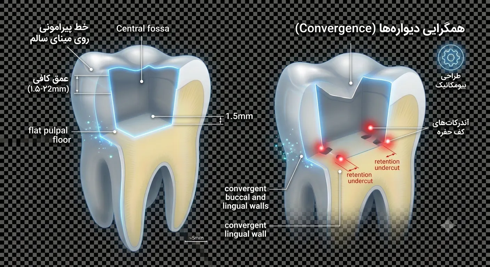

درس هفتم: آمادهسازی حفرات کلاسیک (کلاس I تا V GV Black) برای آمالگام
نسخه استخراجشده؛ ترجمه یا تأیید علمی انجام نشده است. وضعیت: captured
قدم 1 · theory
1
کلاس I آمالگام: فرم Outline و گیر مرکزی
آمادهسازی کلاس I (پوسیدگی شیارهای اکلوزال) پایه تراش آمالگام است :
🔑 اصول کلیدی (با رفرنس به تصویر):
فرم Outline (خط پیرامونی): تعیین مرز نهایی روی مینا. این خط باید تمام شیارهایِ مستعدِ پوسیدگی را در بر بگیرد و روی مینای سالم قرار گیرد (خط سبز در تصویر).
فرم مقاومت (Resistance):
عمق کافی: حداقل ۱.۵ تا ۲ میلیمتر در عاج .
زوایای داخلی گرد: در کف حفره برای توزیع استرس (یادآوری از Lesson 1.3.4).
فرم گیر (Retention):
همگرایی دیوارهها: دیوارههای باکال و لینگوال به سمت اکلوزال همگرا میشوند تا آمالگام را قفل کنند (خطوط آبی در تصویر).
آندرکاتها: با فرز مخروطی معکوس در کف حفره ایجاد میشوند (نقاط قرمز در تصویر).

قدم 2 · theory
2
آمادهسازی کلاس II (پوسیدگی سطوح مزیال/دیستال) پیچیدهترین تراش آمالگام است و از دو بخش اصلی تشکیل شده است :
🔑 اجزای کلیدی :
بخش اکلوژنی (Occlusal Step): مشابه حفره کلاس I است و شامل دمچلچلهای (Dovetail) برای مهار نیروهای افقی و جابهجایی پرگزیمالی است.
باکس پرگزیمال (Proximal Box):
دیوارههای همگرا: دیوارههای باکال و لینگوالِ باکس به سمت اکلوزال همگرا میشوند .
کف جینجیوال: عمود بر محور طولی دندان و دارای عرض کافی (حداقل ۱-۱.۵ میلیمتر) .
زاویه آگزیو-پالپال گرد شده (Axio-palpal Angle): زاویهیِ خطی آگزیو-پالپال باید با ابزار GMT گرد شود تا از تمرکز استرس و شکستن آمالگام جلوگیری شود.
قدم 3 · theory
3
آمادهسازی کلاس V (پوسیدگی در ثلث جینجیوال سطوح صاف) چالش حفظ پالپ را دارد :
🔑 اصول کلیدی :
فرم Outline (خط پیرامونی): تعیین مرز نهایی فقط در حد حذف پوسیدگی. معمولاً فرمی کلیویشکل یا بیضی دارد.
فرم مقاومت (Resistance):
حفظ RDT: دیوارهی آگزیال باید موازی با پالپ تراشیده شود تا ضخامت عاجی (RDT) در عمیقترین نقطه حفظ شود.
مارژین کاووسرفیس ۹۰ درجه: در آمالگام Bevel زدن مارژین کلاس V ممنوع است؛ زیرا منجر به Marginal Ditching میشود .
فرم گیر (Retention):
آندرکاتهای محیطی (Circumferential Undercuts): ایجاد شیارهای گیردار در دیوارههای اکلوزال و جینجیوال با فرز مخروطی معکوس برای قفل کردن آمالگام.
قدم 4 · question
کدام ویژگی در طراحی دیوارههای حفره کلاس I آمالگام، فرم گیر مکانیکی اصلی (Retention Form) را تامین میکند؟
۰۱
دیوارههای واگرا (Divergence) به سمت اکلوزال
۰۲
دیوارههای همگرا (Convergence) به سمت اکلوزال
۰۳
دیوارههای موازی
۰۴
زوایای داخلی گرد شده
قدم 5 · question
طراحی فرمِ "دمچلچلهای" (Dovetail) در بخش اکلوژنی حفرات کلاس II آمالگام، عمدتاً برای تامین کدام هدف بیومکانیکی انجام میشود؟
۰۱
افزایش زیبایی
۰۲
جلوگیری از جابهجاییِ ترمیم به سمتِ مزیال یا دیستال (Pull-out forces) و تامین فرم گیر
۰۳
افزایش عمق حفره
۰۴
گرد کردن زوایا
قدم 6 · question
فرم Outline (خط پیرامونی) در حفرات کلاس V آمالگام، معمولاً چه فرمی دارد و محدودهی آن چگونه تعیین میشود؟
۰۱
فرم بیضی یا کلیویشکل (Kidney-shaped) و محدودهی آن فقط در حد حذف پوسیدگی است